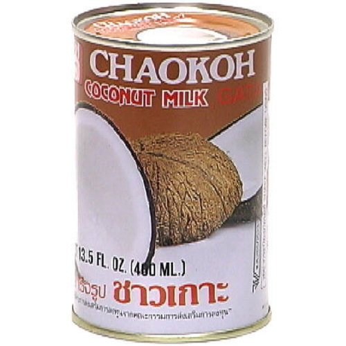
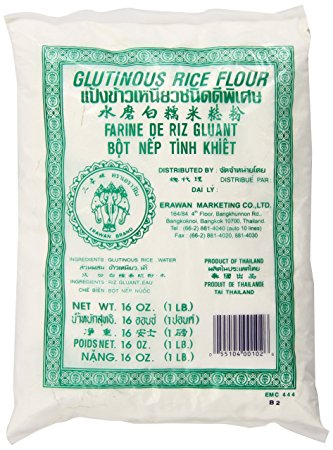
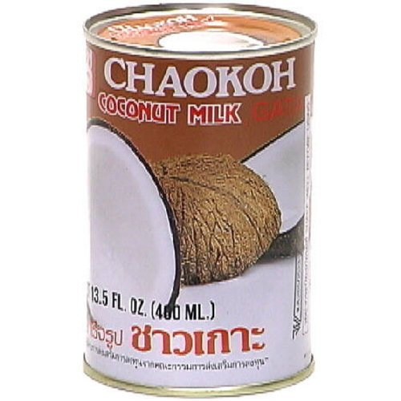
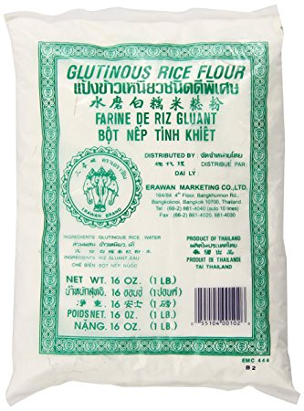

Red Bean Glutinous Rice Cake
INGREDIENTS
- 12 ounce package of red beans
- 13.5 ounce can of coconut milk
- 16 ounce package of glutinous rice flour
- 1/2 cup sugar, more or less (to taste)
- 1 cup water for the cake, some more to cook the red beans
DIRECTIONS
- Cook the beans on high fire. After the water boils, turn fire to low. After 30 minutes of cooking the beans on low fire, check from time to time to see if the beans are soft. When they are soft, add ½ cup or more of sugar until it is sweet enough.
- Combine coconut milk, glutinous rice flour, and red beans, and water together. Depending on how much water is in the red beans, you may need more or less water (usually red beans with no soup require around 12 ounces of water). The batter should be thick enough for you to make ribbons.
- When the dough is well kneaded, cover with plastic wrapper and rest for 30 minutes, so the gluten is well relaxed and you can further pat the noodle dough.
- Pour batter into a countainer to steam for 30 minutes or until a knife stuck into it comes out clean. Alternatively, you can bake it at 350 degrees fahrenheit for 50 minutes
Enjoy!
~ Enjoy!
~ Enjoy!